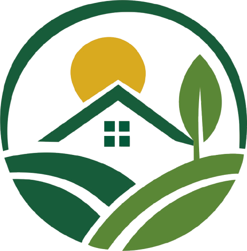
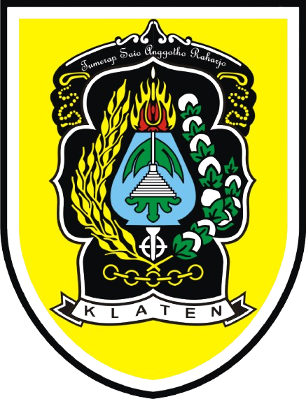

DESA MOJAYAN
Desa Mojayan merupakan desa yang berada di Kabupaten Klaten, Provinsi Jawa Tengah. Dengan semangat gotong royong, pelayanan yang baik, serta potensi pertanian, UMKM, dan pendidikan yang terus berkembang, Desa Mojayan berkomitmen menjadi desa yang maju, mandiri, dan sejahtera.
Visi ini menjadi pedoman dalam penyelenggaraan pemerintahan desa, pembangunan masyarakat, peningkatan pelayanan publik, serta pengembangan potensi desa secara berkelanjutan.